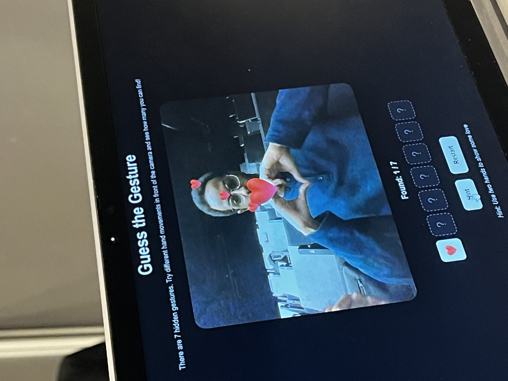
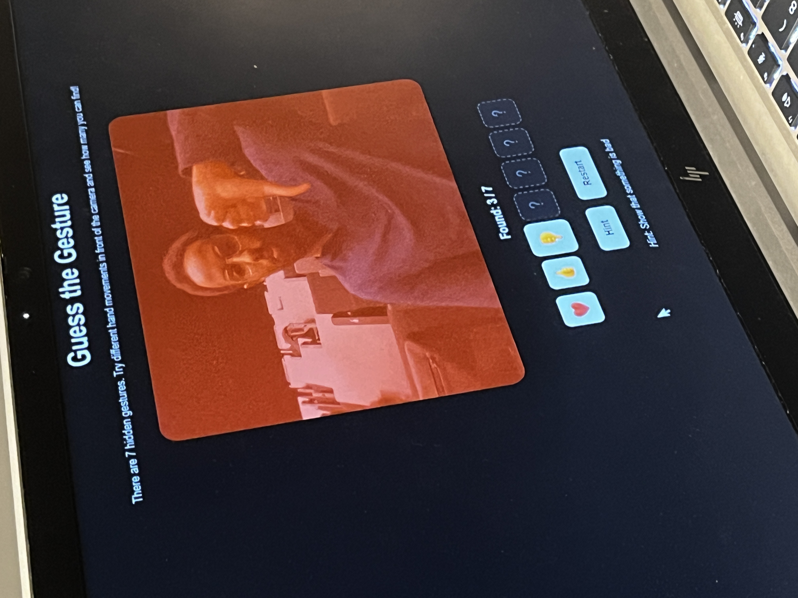
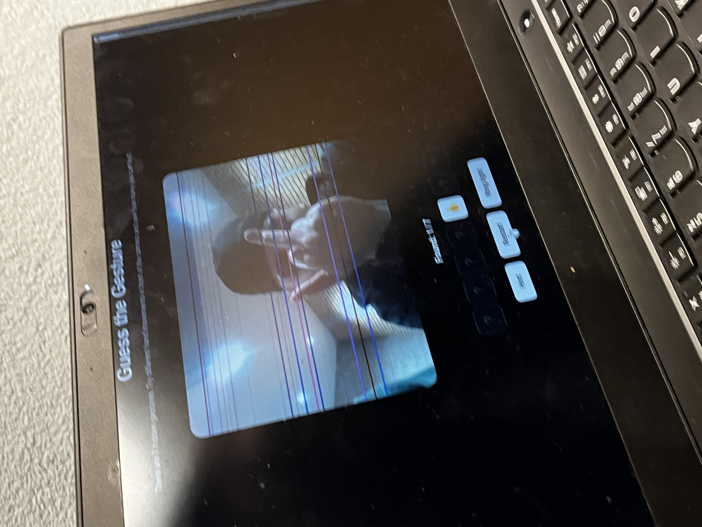

Guess the Gesture
Alex Haseb & Zubeyr Amale
About the Project
Guess the Gesture is an interactive game created by Alex Haseb and Zubeyr Amale. Using a webcam, the game tracks your hands and challenges you to discover seven hidden gestures. Each gesture unlocks a new symbol, and some trigger colorful visual effects. You can use hints if you get stuck and restart whenever you want to try again.
As creators, we enjoy experimenting with technology, design and playful ideas. We wanted to make something simple, fun and easy for anyone to try. The dark design, bright colors and moving dots reflect the interactive and creative feeling of our project.
Gallery


